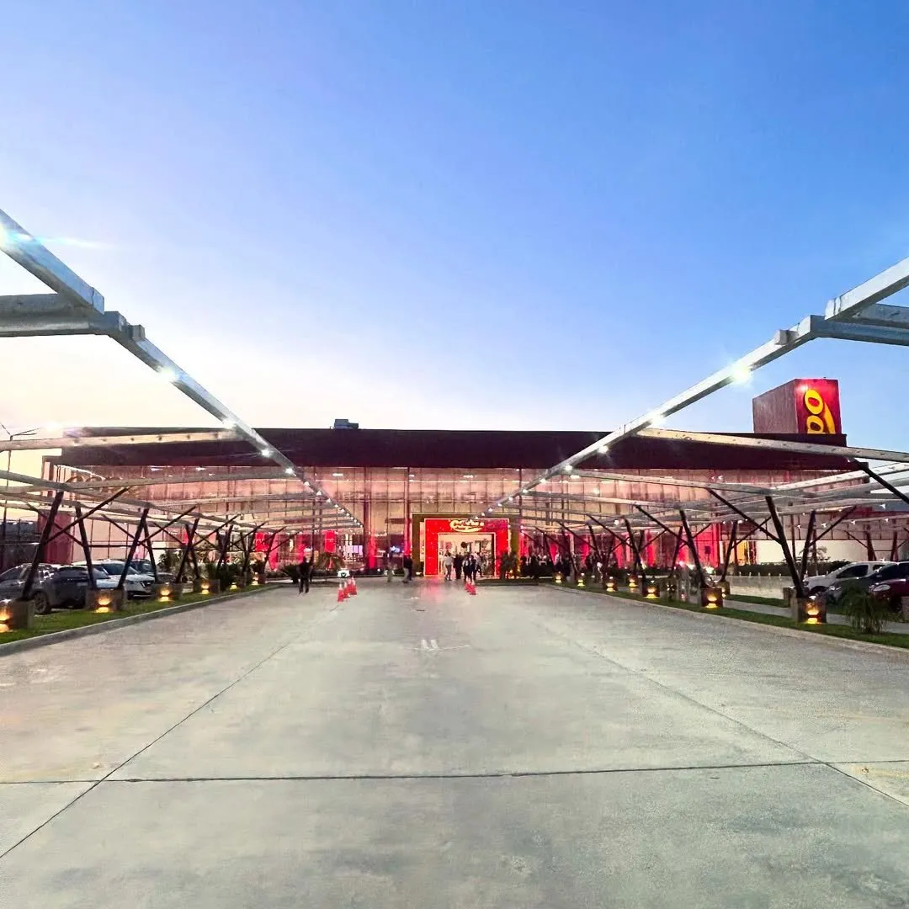

¿Querés trabajar en Capo?
Buscamos gente para caja, carnicería, verdulería, reposición, administración, logística y más, en toda Tucumán.
Sumate al equipoMás de tres décadas creciendo con los barrios de Tucumán.
Abre el primer Capo, en San Miguel de Tucumán.
Llegamos a Ruta 9 km 1304 y a La Rioja 555.
Sucursal en Av. Circunvalación y Democracia.
Ruta 38 esquina Marañón.
Av. América y San Juan.
Fecha de apertura a confirmar
La sucursal más nueva, con verdulería y electro propios en la revista.

Buscamos gente para caja, carnicería, verdulería, reposición, administración, logística y más, en toda Tucumán.
Sumate al equipo